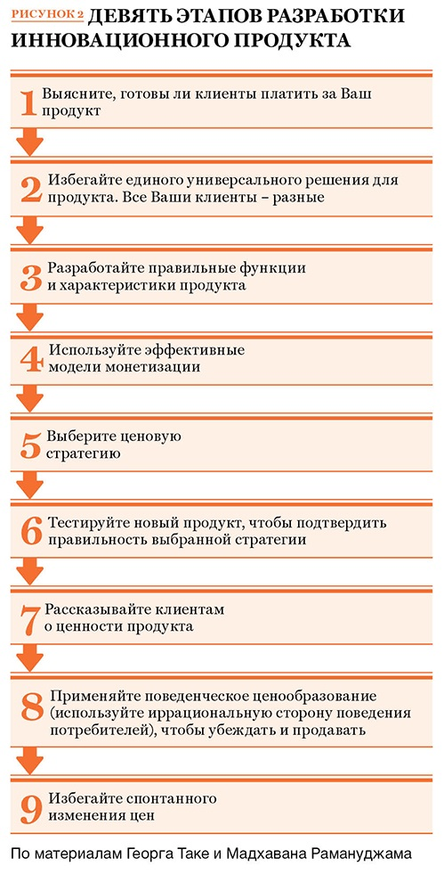

Как добиться, чтобы продукт продавал себя сам
Главная маркетинговая цель, на которую нужно направить усилия
«Цель маркетинга — сделать усилия по сбыту ненужными. Его цель — так хорошо понять клиента, что товар или услуга будут точно подходить последнему и продавать себя сами», – именно так определил цель маркетинга еще в середине XX века Питер Друкер. Эта глобальная цель актуальна и сейчас. Основой задачей маркетологов XXI века становится создание такого продукта, который будет продавать себя сам.
Как создать такой продукт? Для этого необходимо узнать свою целевую аудиторию, выявить ее потребности, узнать, в каких местах с ней проще и эффективнее всего взаимодействовать, подобрать наиболее действенные каналы коммуникации и источники трафика.
Как добиться, чтобы продукт продавал себя сам? Для этого нужно использовать позиционирование.
В основе грамотного позиционирования продукта находятся три фактора:
- особенности продукта/компании (кто мы, что мы предлагаем, почему выберут нас?);
- потребности и ожидания ЦА (кто он, чего он хочет, почему он будет покупать?);
- позиции конкурентов (кто они, что они предлагают и в чем их преимущества?).
Основная цель позиционирования – отстроиться от конкурентов и создать ценность, чтобы перестать конкурировать по цене.
Как разработать позиционирование
Перед тем, как разработать позиционирование, определите текущую позицию, в которой вы находитесь. Затем выберите желаемую позицию и разработайте стратегию, которая поможет из текущей точки достичь желаемой. Обычно это одна из четырех стратегий:
- укрепление существующих позиций;
- постепенное репозиционирование;
- радикальное репозиционирование;
- вытеснение конкурентов с занимаемой позиции.

Кейс позиционирования розничного продавца мебели
Только за счет переупаковки, четкого сегментирования и оптимизации рекламных кампаний удалось увеличить прибыль компании на 30 процентов без увеличения рекламно-маркетинговых бюджетов.
Ситуация. Компания работает на рынке два года, открыла пять магазинов. Входящий поток покупателей и конверсия очень низкие, отдачи от рекламы практически нет.
Анализ ситуации. Магазины позиционируются как мультибрендовые: в них можно купить диваны и за 30 тысяч, и за 300. Реклама, вывеска, торговые залы вводят покупателя в заблуждение. Клиенты не понимают, почему в одном магазине такой разброс цен. Результат очевиден: в магазинах покупают всего, но по чуть-чуть, однако товары сегмента эконом преобладают.
Решение проблемы. Компании необходимо определиться, в каком сегменте, эконом или премиум, она работает. Сеть выбрала сегмент эконом. С фокусировкой на этот сегмент переработали вывеску, внешний вид и организацию торговых залов, рекламу, пересмотрели каналы коммуникации.
Результат. Входящий поток вырос на 30 процентов, на 20 процентов выросла закрываемость сделок, прибыль выросла на 30 процентов.
Примеры по материалам статей журнала «Генеральный Директор»
Пример 1. В 2009 году российская IT-компания хотела повторить успех выведенного ею год назад на рынок антивируса. Его продажи составляли около полумиллиона коробок. Обновленную версию антивируса компания сделала премиальным продуктом: в дорогой упаковке и на другом носителе – флеш-карте вместо CD-диска. Также хотели начать продвижение версии антивируса для мобильных телефонов. Кризис спутал все карты: и частные лица, и компании покупали только самое необходимое. Однако компания не собиралась сдаваться. Чтобы добиться цели, она предложила дополнительную ценность вместо снижения цены. Когда продажи антивирусов упали, логичным шагом казалось немного снизить цену. Но делать этого не хотелось, тем более что себестоимость продукта и так подросла из-за падения рубля. Поэтому вместо снижения цены покупателям предложили дополнительную ценность: приложили к антивирусу в качестве бонуса англо-русский электронный словарь. Почему словарь? Потому что в российском ритейле это второй по популярности вид софта после антивирусов. Новую версию антивируса со словарем в подарок выпустили на рынок в августе 2009 года. Спрос на обновленную коробку превзошел ожидания, так что удалось даже на 10 процентов увеличить цену. Сначала собирались выпускать два вида продукта: со словарем и без него, но на 10 процентов дешевле. Однако рынок проголосовал за версию с бонусом, и уже через три месяца компания полностью обновила линейку, начав предлагать только версию со словарем.
Пример 2. Российский производитель бетонных бордюров вывел на рынок новый продукт – бордюры непрерывного литья. Чтобы продукт оправдал ожидания, компания решила использовать в продвижении хорошие новости, юмор и любопытную информацию. Первое, что сделала компания, – придумала врага для своего бизнеса. Им стал уродливый серый бордюр прежних времен. Ничто так не помогает продвижению, как наличие врага. Если у вашего бизнеса еще нет врага, придумайте его. Врагом совсем не обязательно должен быть конкурент. Им может стать устаревший продукт или образ действий. Это никого не обижает и не задевает лично, а значит, над таким врагом можно смеяться и издеваться. Что компания и сделала в ходе акции под названием «Похороны старого бордюрного камня». Ее целью было привлечь внимание широкой аудитории, весело рассказав горожанам хорошую новость. Лучшая стратегия для любого честного бизнеса, который выходит на рынок, – что-то предложить обществу, не прося ничего взамен. В этом случае потребители будут готовы выслушать вас, посмотреть и опробовать вашу продукцию. Прежде чем устроить зрелище, компания уже сделала подарок городу, поставив изящные бордюры вокруг фонтана и клумб в одном из самых красивых двориков Москвы. Поэтому вопрос о месте акции решился сам собой – она прошла на площадке у фонтана. Приглашение на похороны бордюра разослали по очень многим адресам, в том числе в разные СМИ. Даже те, кто не смог приехать, узнали из приглашения, что появилась новая технология благоустройства. Само мероприятие прошло по подготовленному сценарию: с речами, музыкой, церемонией погребения старого уродливого бордюра и демонстрацией работы новой укладочной машины.
Пример 3. Итальянская фермерская компания Azienda Agricola Giacomo Ferraris нашла способ дополнительно заработать на интересе городских жителей к сельскому хозяйству. Сотрудники подметили, что многие потребители хотят не просто покупать свежие овощи и фрукты в магазине, а готовы сами участвовать в их выращивании. Компания создала в интернете сервис Le verdure del mio orto («Овощи из моего сада»). Теперь городские жители могут выращивать собственные экологически чистые овощи, не отходя от экрана компьютера. Сервис устроен следующим образом. Пользователю, который зарегистрировался на сайте, для начала предлагается выбрать размер огорода. Например, для семьи из одного-двух человек будет достаточно 30 кв. м. Участок такого размера стоит 850 евро в год. Затем ностальгирующий по чистой сельскохозяйственной продукции человек может приступить к наполнению своей потребительской корзины, выбирая более чем из 40 видов овощей и трав. Договор с клиентом на выращивание и доставку продукции заключается на год. Чтобы личный огород не казался клиентам слишком далеким или виртуальным, создатели сайта предусмотрели дополнительные опции. Например, можно заказать фотоотчет о том, как овощи растут в течение года (для этого пользователь должен дополнительно заплатить 49 евро). Заказчик может установить в огороде пугало со своим лицом (эта услуга обойдется в 40 евро). После выбора всех параметров и оплаты услуг фермер начинает работу. Урожай доставляется раз в неделю, овощи попадают на стол клиента в течение 24 часов с момента сбора.